Practice 1: ATEs and CATEs
# Examine the effect of private school on earnings
schools <- fread("ATEs&CTEs/public_private_earnings.csv")
schools## student_id group ivy1 ivy2 ivy3 public1 public2 public3 enrolled earnings
## 1: 1 A <NA> Reject Admit <NA> Admit <NA> ivy3 110000
## 2: 2 A <NA> Reject Admit <NA> Admit <NA> ivy3 100000
## 3: 3 A <NA> Reject Admit <NA> Admit <NA> public2 110000
## 4: 4 B Admit <NA> <NA> Admit <NA> Admit ivy1 60000
## 5: 5 B Admit <NA> <NA> Admit <NA> Admit public3 30000
## 6: 6 C <NA> Admit <NA> <NA> <NA> <NA> ivy2 115000
## 7: 7 C <NA> Admit <NA> <NA> <NA> <NA> ivy2 75000
## 8: 8 D Reject <NA> <NA> Admit Admit <NA> public1 90000
## 9: 9 D Reject <NA> <NA> Admit Admit <NA> public2 60000Select comparable groups
Evaluate ATEs
Manual Calculation
\[ \text{ATE}=\sum_i \pi_i\times \text{CATE}_i \]
where \(\pi_i\) is the share of group \(i\) and \(\text{CATE}_i\) is the conditional ATE of observations in group \(i\).
Regression
Manual Calculation
schools[, ':='(private = grepl('ivy', enrolled))]
schools[group %in% c('A', 'B')][, .(n_obs = .N, avg_earnings = mean(earnings))
, by=c('group', 'private')]## group private n_obs avg_earnings
## 1: A TRUE 2 105000
## 2: A FALSE 1 110000
## 3: B TRUE 1 60000
## 4: B FALSE 1 30000Regression
lm(earnings ~ private + factor(group),
data=schools[group %in% c('A', 'B')])##
## Call:
## lm(formula = earnings ~ private + factor(group), data = schools[group %in%
## c("A", "B")])
##
## Coefficients:
## (Intercept) privateTRUE factor(group)B
## 100000 10000 -60000Practice 2: Matching and Inverse Probability Weighting
# Examine the effect of bed net usage on malaria risk
nets <- fread("Matching&IPW/mosquito_nets.csv")
head(nets)## id net net_num malaria_risk income health household eligible temperature resistance
## 1: 1 TRUE 1 33 781 56 2 FALSE 21.1 59
## 2: 2 FALSE 0 42 974 57 4 FALSE 26.5 73
## 3: 3 FALSE 0 80 502 15 3 FALSE 25.6 65
## 4: 4 TRUE 1 34 671 20 5 TRUE 21.3 46
## 5: 5 FALSE 0 44 728 17 5 FALSE 19.2 54
## 6: 6 FALSE 0 25 1050 48 1 FALSE 25.3 34Directed Acyclic Graph (DAG)
Identify mediator, confounder, and collider
Example
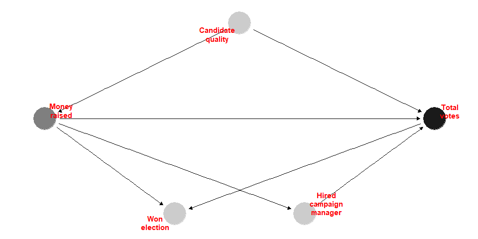
DAG for nets
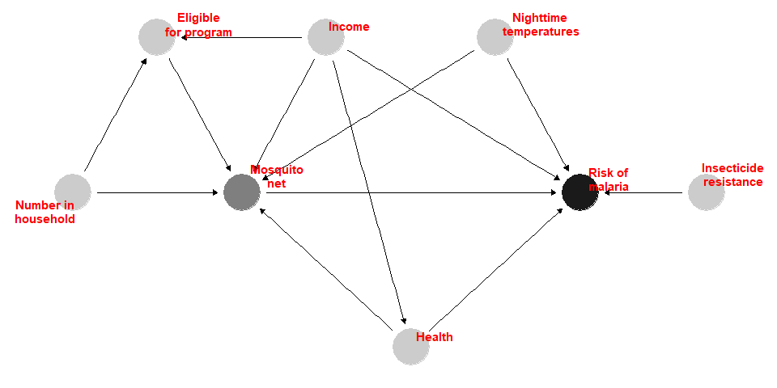
- Control variables?
- Do we need to control
eligibleandhousehold
Conditional Independence
- \(\text{Health}\perp\text{Numb. of Household}\)
cor(nets$health, nets$household)## [1] 9.785337e-05- \(\text{Income}\perp\text{Insect Resistance}\)
cor(nets$income, nets$resistance)## [1] 0.01371297- \(\text{Malaria risk}\perp\text{Numb. of Household} \mid \text{(Net Use, Health, Income, Temp)}\)
lm(malaria_risk ~ household + net + health + income + temperature,
data = nets) %>%
(function(x) summary(x)$coeff) %>%
(function(x) round(x, 4))## Estimate Std. Error t value Pr(>|t|)
## (Intercept) 76.2067 0.9658 78.9062 0.0000
## household -0.0155 0.0893 -0.1730 0.8626
## netTRUE -10.4370 0.2665 -39.1633 0.0000
## health 0.1483 0.0107 13.8997 0.0000
## income -0.0751 0.0010 -72.5635 0.0000
## temperature 1.0058 0.0310 32.4829 0.0000Notes: No correlation ⇏ Independence
[Example] Flip a fair coin to determine the amount of your bet: bet $1 if heads \$2 if tails. Then flip again: win the amount of your bet if heads lose if tails.
Naive Comparison
model_naive <- lm(malaria_risk ~ net, data = nets)
summary(model_naive)##
## Call:
## lm(formula = malaria_risk ~ net, data = nets)
##
## Residuals:
## Min 1Q Median 3Q Max
## -26.937 -9.605 -1.937 7.063 55.395
##
## Coefficients:
## Estimate Std. Error t value Pr(>|t|)
## (Intercept) 41.9365 0.4049 103.57 <2e-16 ***
## netTRUE -16.3315 0.6495 -25.15 <2e-16 ***
## ---
## Signif. codes: 0 '***' 0.001 '**' 0.01 '*' 0.05 '.' 0.1 ' ' 1
##
## Residual standard error: 13.25 on 1750 degrees of freedom
## Multiple R-squared: 0.2654, Adjusted R-squared: 0.265
## F-statistic: 632.3 on 1 and 1750 DF, p-value: < 2.2e-16Balance Check
for (v in c('income', 'temperature', 'health')) {
plot_command <- paste0('ggplot(data = nets, aes(x =', v,
', fill=net)) +geom_density(alpha = 0.7)')
print(eval(parse(text = plot_command)))
test_result <- t.test(as.formula(paste0(v, '~net')), data=nets)
print(test_result)
}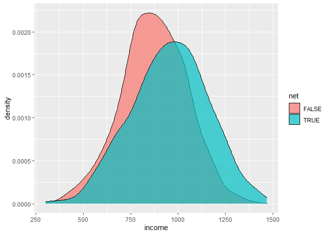
##
## Welch Two Sample t-test
##
## data: income by net
## t = -8.8113, df = 1284.7, p-value < 2.2e-16
## alternative hypothesis: true difference in means between group FALSE and group TRUE is not equal to 0
## 95 percent confidence interval:
## -100.79660 -64.08593
## sample estimates:
## mean in group FALSE mean in group TRUE
## 872.7526 955.1938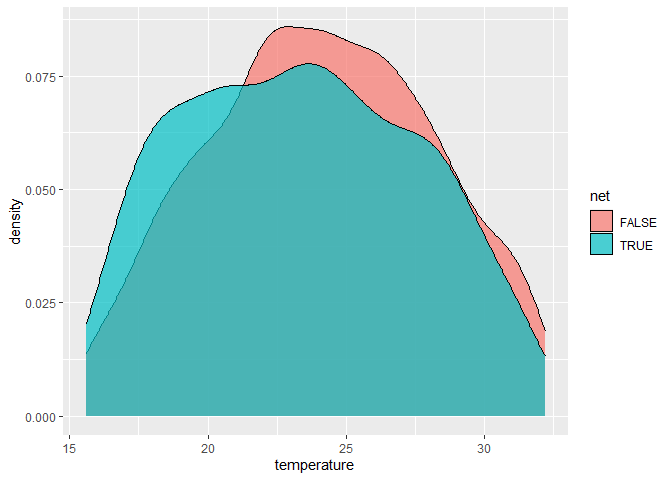
##
## Welch Two Sample t-test
##
## data: temperature by net
## t = 3.492, df = 1404.3, p-value = 0.0004943
## alternative hypothesis: true difference in means between group FALSE and group TRUE is not equal to 0
## 95 percent confidence interval:
## 0.3098586 1.1042309
## sample estimates:
## mean in group FALSE mean in group TRUE
## 24.08796 23.38091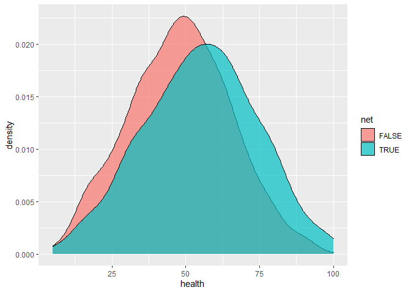
##
## Welch Two Sample t-test
##
## data: health by net
## t = -7.6447, df = 1346.9, p-value = 3.961e-14
## alternative hypothesis: true difference in means between group FALSE and group TRUE is not equal to 0
## 95 percent confidence interval:
## -8.610309 -5.093693
## sample estimates:
## mean in group FALSE mean in group TRUE
## 48.05696 54.90896Regression
model_regression <- lm(malaria_risk ~ net + income + temperature + health, data = nets)
summary(model_regression)##
## Call:
## lm(formula = malaria_risk ~ net + income + temperature + health,
## data = nets)
##
## Residuals:
## Min 1Q Median 3Q Max
## -13.143 -3.915 -0.561 3.333 16.461
##
## Coefficients:
## Estimate Std. Error t value Pr(>|t|)
## (Intercept) 76.159901 0.926835 82.17 <2e-16 ***
## netTRUE -10.441932 0.264906 -39.42 <2e-16 ***
## income -0.075144 0.001035 -72.58 <2e-16 ***
## temperature 1.005855 0.030953 32.50 <2e-16 ***
## health 0.148362 0.010668 13.91 <2e-16 ***
## ---
## Signif. codes: 0 '***' 0.001 '**' 0.01 '*' 0.05 '.' 0.1 ' ' 1
##
## Residual standard error: 5.244 on 1747 degrees of freedom
## Multiple R-squared: 0.8852, Adjusted R-squared: 0.8849
## F-statistic: 3366 on 4 and 1747 DF, p-value: < 2.2e-16Matching (Mahalanobis Distance)
Mahalanobis distance between \(\bf{x}\) and \(\bf{y}\)
\[ (\bf{x} - \bf{y})\Sigma^{-1}(\bf{x} - \bf{y})^T \]
where \(\Sigma\) is the covariance matrix.
library(MatchIt)
matched <- matchit(net ~ income + temperature + health, data = nets,
method = "nearest",
distance = "mahalanobis",
replace = TRUE)
matched## A matchit object
## - method: 1:1 nearest neighbor matching with replacement
## - distance: Mahalanobis
## - number of obs.: 1752 (original), 1120 (matched)
## - target estimand: ATT
## - covariates: income, temperature, health# Dimension of the data used for matching
dim(matched$X)## [1] 1752 3# Number of the treated
sum(matched$treat)## [1] 681# Number of the matched control
sum(matched$weights>0)## [1] 1120# Number of the unmatched control
sum(matched$weights==0)## [1] 632- The
matchit()function determines the pair weights by measuring how close the matched pair are. The weights can be used in the regression to account for the variation in distance.
nets_matched <- match.data(matched)
model_matched <- lm(malaria_risk ~ net, data = nets_matched, weights = weights)
summary(model_matched)##
## Call:
## lm(formula = malaria_risk ~ net, data = nets_matched, weights = weights)
##
## Weighted Residuals:
## Min 1Q Median 3Q Max
## -36.312 -7.605 -1.681 5.395 55.395
##
## Coefficients:
## Estimate Std. Error t value Pr(>|t|)
## (Intercept) 36.0940 0.5951 60.65 <2e-16 ***
## netTRUE -10.4890 0.7632 -13.74 <2e-16 ***
## ---
## Signif. codes: 0 '***' 0.001 '**' 0.01 '*' 0.05 '.' 0.1 ' ' 1
##
## Residual standard error: 12.47 on 1118 degrees of freedom
## Multiple R-squared: 0.1445, Adjusted R-squared: 0.1438
## F-statistic: 188.9 on 1 and 1118 DF, p-value: < 2.2e-16Balance Check
for (v in c('income', 'temperature', 'health')) {
test_result <- t.test(as.formula(paste0(v, '~net')), data=nets_matched)
print(test_result)
}##
## Welch Two Sample t-test
##
## data: income by net
## t = -3.5017, df = 990.87, p-value = 0.0004829
## alternative hypothesis: true difference in means between group FALSE and group TRUE is not equal to 0
## 95 percent confidence interval:
## -64.12955 -18.06677
## sample estimates:
## mean in group FALSE mean in group TRUE
## 914.0957 955.1938
##
##
## Welch Two Sample t-test
##
## data: temperature by net
## t = 0.79239, df = 952.76, p-value = 0.4283
## alternative hypothesis: true difference in means between group FALSE and group TRUE is not equal to 0
## 95 percent confidence interval:
## -0.2955968 0.6959627
## sample estimates:
## mean in group FALSE mean in group TRUE
## 23.58109 23.38091
##
##
## Welch Two Sample t-test
##
## data: health by net
## t = -3.0287, df = 977.39, p-value = 0.002521
## alternative hypothesis: true difference in means between group FALSE and group TRUE is not equal to 0
## 95 percent confidence interval:
## -5.567087 -1.189325
## sample estimates:
## mean in group FALSE mean in group TRUE
## 51.53075 54.90896Matching (Propensity Score)
Other Source：Simon Ejdemyr’s notes on propensity score matching
matched_psm <- matchit(net ~ income + temperature + health, data = nets,
method = "nearest",
replace = TRUE)
matched_psm## A matchit object
## - method: 1:1 nearest neighbor matching with replacement
## - distance: Propensity score
## - estimated with logistic regression
## - number of obs.: 1752 (original), 1098 (matched)
## - target estimand: ATT
## - covariates: income, temperature, healthnets_matched_psm <- match.data(matched_psm)
model_matched_psm <- lm(malaria_risk ~ net, data = nets_matched_psm, weights = weights)
summary(model_matched_psm)##
## Call:
## lm(formula = malaria_risk ~ net, data = nets_matched_psm, weights = weights)
##
## Weighted Residuals:
## Min 1Q Median 3Q Max
## -57.745 -7.605 -1.605 5.395 59.226
##
## Coefficients:
## Estimate Std. Error t value Pr(>|t|)
## (Intercept) 36.3025 0.6187 58.67 <2e-16 ***
## netTRUE -10.6975 0.7857 -13.62 <2e-16 ***
## ---
## Signif. codes: 0 '***' 0.001 '**' 0.01 '*' 0.05 '.' 0.1 ' ' 1
##
## Residual standard error: 12.63 on 1096 degrees of freedom
## Multiple R-squared: 0.1447, Adjusted R-squared: 0.1439
## F-statistic: 185.4 on 1 and 1096 DF, p-value: < 2.2e-16Common Support
model_treatment <- glm(net ~ income + temperature + health, data = nets,
family = binomial(link = "logit"))
nets_pred <- copy(nets)
nets_pred$pred <- model_treatment$fitted.values
ggplot(data = nets_pred, aes(x = pred, fill=net)) +
geom_histogram(position = "identity", alpha = 0.7, bins = 50) + xlim(c(0, 1)) +
labs(title=paste0('Full Sample (N = ', nrow(nets_pred), ')'))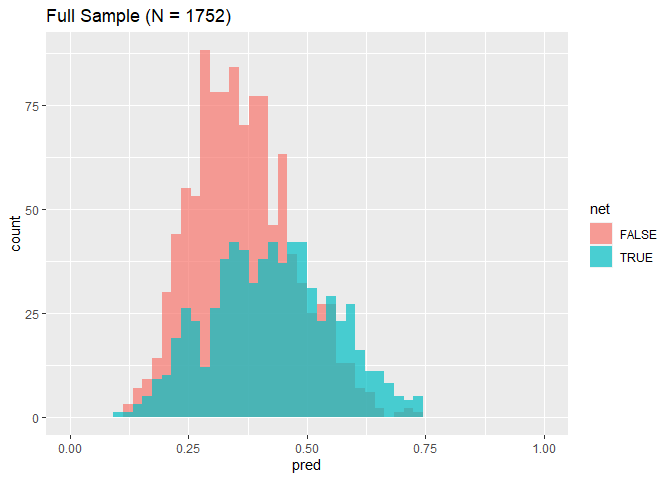
ggplot(data = nets_pred[id %in% nets_matched_psm$id], aes(x = pred, fill=net)) +
geom_histogram(position = "identity", alpha = 0.7, bins = 50) + xlim(c(0, 1)) +
labs(title=paste0('Matched Sample (N = ', nrow(nets_matched_psm), ')'))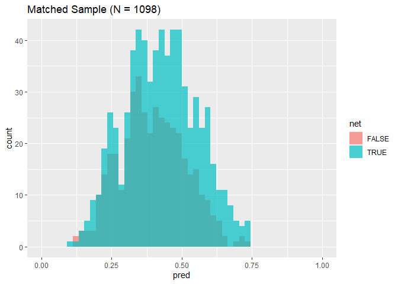
Balance Check
for (v in c('income', 'temperature', 'health')) {
plot_command <- paste0('ggplot(data = nets_matched_psm, aes(x =', v,
', fill=net)) +geom_density(alpha = 0.7)')
print(eval(parse(text = plot_command)))
test_result <- t.test(as.formula(paste0(v, '~net')), data=nets_matched_psm)
print(test_result)
}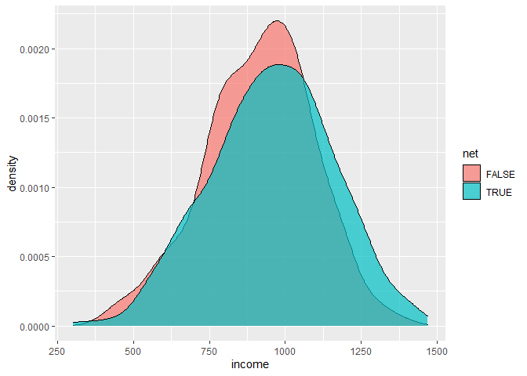
##
## Welch Two Sample t-test
##
## data: income by net
## t = -3.548, df = 954.79, p-value = 0.0004071
## alternative hypothesis: true difference in means between group FALSE and group TRUE is not equal to 0
## 95 percent confidence interval:
## -64.64167 -18.59971
## sample estimates:
## mean in group FALSE mean in group TRUE
## 913.5731 955.1938##
## Welch Two Sample t-test
##
## data: temperature by net
## t = 1.4522, df = 910.52, p-value = 0.1468
## alternative hypothesis: true difference in means between group FALSE and group TRUE is not equal to 0
## 95 percent confidence interval:
## -0.1294926 0.8664727
## sample estimates:
## mean in group FALSE mean in group TRUE
## 23.74940 23.38091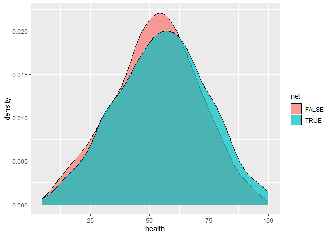
##
## Welch Two Sample t-test
##
## data: health by net
## t = -2.1015, df = 920.12, p-value = 0.03587
## alternative hypothesis: true difference in means between group FALSE and group TRUE is not equal to 0
## 95 percent confidence interval:
## -4.6145611 -0.1577902
## sample estimates:
## mean in group FALSE mean in group TRUE
## 52.52278 54.90896Inverse Probability Weighting
# Predict the probability of a household using bed nets
model_treatment <- glm(net ~ income + temperature + health, data = nets,
family = binomial(link = "logit"))
nets_ipw <- copy(nets)
nets_ipw$pred <- model_treatment$fitted.values
nets_ipw[, ipw := (net_num / pred) + (1 - net_num) / (1 - pred)]
# Evaluate the effect with inverse probability weights
model_ipw <- lm(malaria_risk ~ net, data = nets_ipw, weights = ipw)
summary(model_ipw)##
## Call:
## lm(formula = malaria_risk ~ net, data = nets_ipw, weights = ipw)
##
## Weighted Residuals:
## Min 1Q Median 3Q Max
## -45.705 -14.622 -4.924 10.791 162.642
##
## Coefficients:
## Estimate Std. Error t value Pr(>|t|)
## (Intercept) 39.6788 0.4684 84.71 <2e-16 ***
## netTRUE -10.1312 0.6583 -15.39 <2e-16 ***
## ---
## Signif. codes: 0 '***' 0.001 '**' 0.01 '*' 0.05 '.' 0.1 ' ' 1
##
## Residual standard error: 19.54 on 1750 degrees of freedom
## Multiple R-squared: 0.1192, Adjusted R-squared: 0.1187
## F-statistic: 236.8 on 1 and 1750 DF, p-value: < 2.2e-16Inverse Probability Weights
\[ \frac{\text{Treatment}}{\text{Propensity}}+\frac{1-\text{Treatment}}{1-\text{Propensity}} \]
Think of this formula in a controlled experiment scenario:
Individuals are more likely to be never-takers (in a control group) if their likelihood values of receiving treatment are lower than the average and they do not receive treatment
Individuals are more likely to be always-takers (in a treatment group) if their likelihood values of receiving treatment are higher than the average and they do receive treatment
Individuals are more likely to be compliers (in both the control and the treatment group) if their likelihood values of receiving treatment are inconsistent with their actual treatment
To the end, we evaluate the change in the compliers’ outcomes due to their different exposures to the treatment.
Results
##
## ===============================================================================
## Naive Regression Matching (M) Matching (PS) IPW
## -------------------------------------------------------------------------------
## (Intercept) 41.94 *** 76.16 *** 36.09 *** 36.30 *** 39.68 ***
## (0.40) (0.93) (0.60) (0.62) (0.47)
## netTRUE -16.33 *** -10.44 *** -10.49 *** -10.70 *** -10.13 ***
## (0.65) (0.26) (0.76) (0.79) (0.66)
## income -0.08 ***
## (0.00)
## temperature 1.01 ***
## (0.03)
## health 0.15 ***
## (0.01)
## -------------------------------------------------------------------------------
## R^2 0.27 0.89 0.14 0.14 0.12
## Adj. R^2 0.27 0.88 0.14 0.14 0.12
## Num. obs. 1752 1752 1120 1098 1752
## ===============================================================================
## *** p < 0.001; ** p < 0.01; * p < 0.05Overestimate or underestimate? Why?
Suppose \(y = \beta x + \theta z + \varepsilon\) where \(z\) is an omitting variable.
\[ \begin{align*}~ z &= \gamma x+\eta \\\\ y &= \beta x +\xi = \beta x + \theta\gamma x +\theta\eta+\epsilon \end{align*} \]
where \(\beta'=\beta+\theta\gamma\neq\beta\) if \(\theta\neq0\) or \(\gamma\neq0\).
Practice 3: Difference-in-differences
injury <- fread("Did/injury.csv")[ky==1]
setnames(injury, old=c('durat', 'ldurat', 'afchnge'),
new=c('duration', 'log_duration', 'after_1980'))
injury$highearn <- injury$highearn==1
print(paste(c('Number of Rows:', 'Number of Columns:'), dim(injury)))## [1] "Number of Rows: 5626" "Number of Columns: 30"head(injury)## duration after_1980 highearn male married hosp indust injtype age prewage totmed injdes benefit ky mi log_duration afhigh lprewage lage ltotmed head neck upextr trunk lowback lowextr occdis manuf construc highlpre
## 1: 1 1 TRUE 1 0 1 3 1 26 404.9500 1187.5732 1010 246.8375 1 0 0.000000 1 6.003764 3.258096 7.079667 1 0 0 0 0 0 0 0 0 6.003764
## 2: 1 1 TRUE 1 1 0 3 1 31 643.8250 361.0786 1404 246.8375 1 0 0.000000 1 6.467427 3.433987 5.889095 1 0 0 0 0 0 0 0 0 6.467427
## 3: 84 1 TRUE 1 1 1 3 1 37 398.1250 8963.6572 1032 246.8375 1 0 4.430817 1 5.986766 3.610918 9.100934 1 0 0 0 0 0 0 0 0 5.986766
## 4: 4 1 TRUE 1 1 1 3 1 31 527.8000 1099.6483 1940 246.8375 1 0 1.386294 1 6.268717 3.433987 7.002746 1 0 0 0 0 0 0 0 0 6.268717
## 5: 1 1 TRUE 1 1 0 3 1 23 528.9375 372.8019 1940 211.5750 1 0 0.000000 1 6.270870 3.135494 5.921047 1 0 0 0 0 0 0 0 0 6.270870
## 6: 1 1 TRUE 1 1 0 3 1 34 614.2500 211.0199 1425 176.3125 1 0 0.000000 1 6.420402 3.526361 5.351953 1 0 0 0 0 0 0 0 0 6.420402Background (Wooldridge’s Intro Econometrics P411): Meyer, Viscusi, and Durbin (1995) (hereafter, MVD) studied the length of time (in weeks) that an injured worker receives workers’ compensation. On July 15, 1980, Kentucky raised the cap on weekly earnings that were covered by workers’ compensation. An increase in the cap has no effect on the benefit for low-income workers, but it makes it less costly for a high-income worker to stay on workers’ compensation. Therefore, the control group is low-income workers, and the treatment group is high-income workers; high-income workers are defined as those who were subject to the pre-policy change cap. Using random samples both before and after the policy change, MVD were able to test whether more generous workers’ compensation causes people to stay out of work longer (everything else fixed). They started with a difference-in-differences analysis, using log(durat) as the dependent variable. Let afchnge be the dummy variable for observations after the policy change and highearn the dummy variable for high earners.
Change after 1980
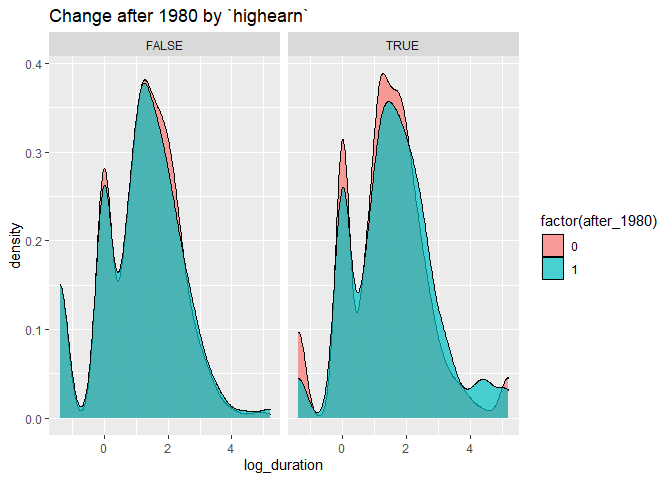
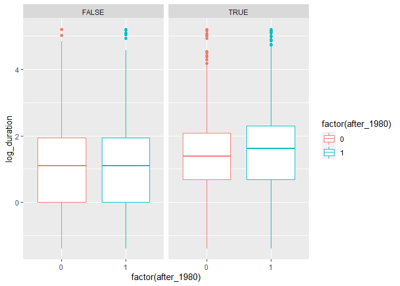
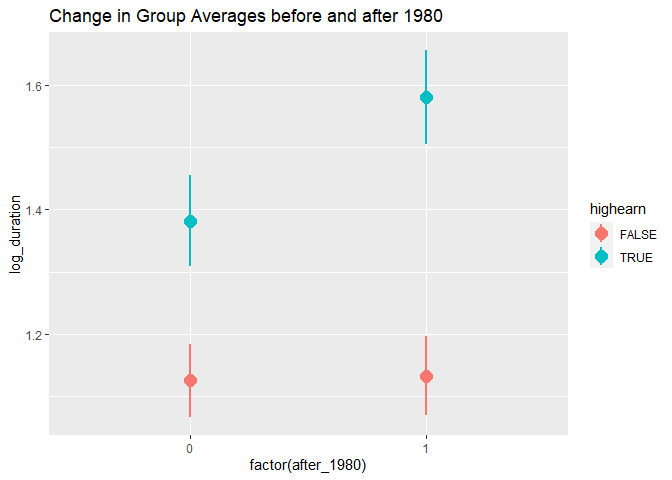
Regression
\[ \log(\text{duration}) = \alpha + \beta \text{highearn} + \gamma\text{after\_1980} + \delta(\text{highearn} \times \text{after\_1980}) + \epsilon \]
model_simple <- lm(log_duration ~ highearn + after_1980 + highearn * after_1980,
data = injury)
summary(model_simple)##
## Call:
## lm(formula = log_duration ~ highearn + after_1980 + highearn *
## after_1980, data = injury)
##
## Residuals:
## Min 1Q Median 3Q Max
## -2.9666 -0.8872 0.0042 0.8126 4.0784
##
## Coefficients:
## Estimate Std. Error t value Pr(>|t|)
## (Intercept) 1.125615 0.030737 36.621 < 2e-16 ***
## highearnTRUE 0.256479 0.047446 5.406 6.72e-08 ***
## after_1980 0.007657 0.044717 0.171 0.86404
## highearnTRUE:after_1980 0.190601 0.068509 2.782 0.00542 **
## ---
## Signif. codes: 0 '***' 0.001 '**' 0.01 '*' 0.05 '.' 0.1 ' ' 1
##
## Residual standard error: 1.269 on 5622 degrees of freedom
## Multiple R-squared: 0.02066, Adjusted R-squared: 0.02014
## F-statistic: 39.54 on 3 and 5622 DF, p-value: < 2.2e-16Add more controls: male, married, age, hosp (1 = hospitalized), indust (1 = manuf, 2 = construc, 3 = other), injtype (1-8; categories for different types of injury), lprewage (log of wage prior to filing a claim)
model_full <- lm(log_duration ~ highearn + after_1980 + highearn * after_1980 + male +
married + age + hosp + as.factor(indust) + as.factor(injtype) + lprewage,
data = injury)
summary(model_full)##
## Call:
## lm(formula = log_duration ~ highearn + after_1980 + highearn *
## after_1980 + male + married + age + hosp + as.factor(indust) +
## as.factor(injtype) + lprewage, data = injury)
##
## Residuals:
## Min 1Q Median 3Q Max
## -4.0606 -0.7726 0.0931 0.7314 4.3409
##
## Coefficients:
## Estimate Std. Error t value Pr(>|t|)
## (Intercept) -1.528202 0.422212 -3.620 0.000298 ***
## highearnTRUE -0.151781 0.089116 -1.703 0.088591 .
## after_1980 0.049540 0.041321 1.199 0.230624
## male -0.084289 0.042315 -1.992 0.046427 *
## married 0.056662 0.037305 1.519 0.128845
## age 0.006507 0.001338 4.863 1.19e-06 ***
## hosp 1.130493 0.037006 30.549 < 2e-16 ***
## as.factor(indust)2 0.183864 0.054131 3.397 0.000687 ***
## as.factor(indust)3 0.163485 0.037852 4.319 1.60e-05 ***
## as.factor(injtype)2 0.935468 0.143731 6.508 8.29e-11 ***
## as.factor(injtype)3 0.635466 0.085442 7.437 1.19e-13 ***
## as.factor(injtype)4 0.554550 0.092849 5.973 2.49e-09 ***
## as.factor(injtype)5 0.641201 0.085435 7.505 7.15e-14 ***
## as.factor(injtype)6 0.615041 0.086312 7.126 1.17e-12 ***
## as.factor(injtype)7 0.991336 0.190532 5.203 2.03e-07 ***
## as.factor(injtype)8 0.434082 0.118912 3.650 0.000264 ***
## lprewage 0.284481 0.080056 3.554 0.000383 ***
## highearnTRUE:after_1980 0.168721 0.063975 2.637 0.008381 **
## ---
## Signif. codes: 0 '***' 0.001 '**' 0.01 '*' 0.05 '.' 0.1 ' ' 1
##
## Residual standard error: 1.15 on 5329 degrees of freedom
## (279 observations deleted due to missingness)
## Multiple R-squared: 0.1899, Adjusted R-squared: 0.1873
## F-statistic: 73.46 on 17 and 5329 DF, p-value: < 2.2e-16Summary
##
## =================================================
## Simple Full
## -------------------------------------------------
## (Intercept) 1.13 *** -1.53 ***
## (0.03) (0.42)
## highearnTRUE 0.26 *** -0.15
## (0.05) (0.09)
## after_1980 0.01 0.05
## (0.04) (0.04)
## highearnTRUE:after_1980 0.19 ** 0.17 **
## (0.07) (0.06)
## -------------------------------------------------
## Additional Controls NO YES
## R^2 0.02 0.19
## Adj. R^2 0.02 0.19
## Num. obs. 5626 5347
## =================================================
## *** p < 0.001; ** p < 0.01; * p < 0.05